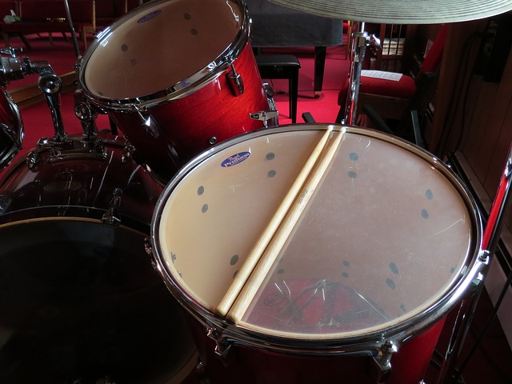
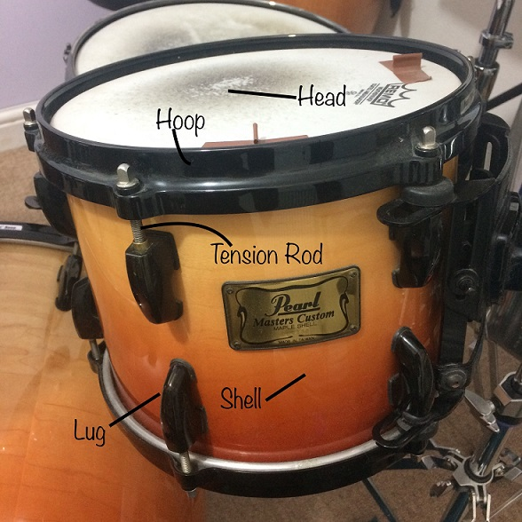
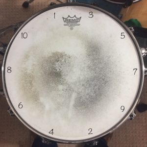

Taste The Music
No.Boundary.For.Your.Soul
How To Tune Your Drums
Guitarists have to tune their strings to certain notes in order to play chords, saxophonists have to tune their instruments so the correct note sounds when their sax is blown, but drums are completely different. Drums don't have a “correct” tuning because drummers don't usually play melodies or harmonies. In fact, it could be argued that the term “in tune” or “out of tune” can't really be applied to the drum set. This gives us an array of options when tuning our instruments. We could aim for a high pitch by tightening each drum, or a low pitch by leaving each drum loose. This article will give you some tips on how to tune a drum. We'll also talk through some mistakes and the pros/cons of each tuning as well as recommend musical application for each tuning.
DRUM ANATOMY
When you tune a drum you are effectively stretching the head over the shell of the drum. By turning the tension rods you are pulling the edge of the head closer to the lug, which (via the hoop) stretches the head tighter and produces a higher pitch. If the head is stretched more loosely the drum will produce a lower pitch.
CYMBAL SIZE
Here's a guide to what cymbals you'll need and the size of each.
- Rest the drum head over the bearing edges of the drum shell.
- Place the hoop over the drum head and align each hole with a lug.
- Insert the tension rods into the hoop but don't screw them in yet.
- Important! In the next 2 steps, follow the diagram below. Tighten each tension rod using only your fingers. We call this "finger tight."
- Proceed to turn each tension rod by the same amount. For low pitched tunings, turn small amounts each time (45 degrees). For high pitched tunings, turn more each time (90 degrees). Follow the order specified below. Once your drums are at a rough pitch that you're happy with, proceed to "fine tuning."
- Repeat this process with the other side of the drum. (The side that you hit is called the "batter side" and the other side is called the "resonant side.")
- Do the same with every drum. As their names suggest, the the toms need to be tuned in relation to each other. The high tom should be the highest pitch, followed by the mid tom and with the low tom being the lowest pitched. These should all be a higher pitch than the bass drum, which should create a deep "thud."
FINE TUNING
Once you're happy with the pitch of your drums, fine tuning helps remove any harsh "overtones" that might be present.
Follow the same order specified above. Go around striking the head gently next to each tension rod. Listen for any unusually high or low pitches and adjust the relevant tension rod accordingly. Repeat this process around the whole drum and do the same with the resonant head.
I personally like to tune my batter and resonant heads to the same pitch to create as even a sound as possible. Experiment with the tuning of your resonant head in relation to the batter, try all different tunings, and see which you prefer. The looser the resonant head, the washout the sound will be. By tightening the resonant head, the drum will have a shorter sound.
STYLISTIC TUNINGS
Here is a list of wide ranging musical styles and the most common tunings associated with them:
- Pop - medium tuning. Aim for a right crisp snare and deep low bass drum. Toms should sing but still have depth. I'd recommend using a dampening product such as moongel or even some tape.
- Rock - low tuning. Aim for a powerful bass and snare sound. Toms should be deep and boomy. Dampen your toms and bass drum a lot.
- Jazz - high tuning. Snare should be crisp and light. Bass should be more resonant and toms should sing clearly. Try to avoid dampening for that authentic early swing sound.
This is just a guide, don't feel confined to tuning your drums a particular way because of the music you play. By playing jazz with a low tuned kit, for example, you could create a really unique sound.
FINAL THOUGHTS
The only way you'll know which tuning is for you is by experimenting. It took me years to find a tuning that I was happy with, and I still change the tuning of my drums depending on my mood and the style of music that I'm playing. It takes a lot of practice to be able to tune a drum comfortably, but the results you get after investing this time are worth it. After all if you don't enjoy the way your drums sound you won't be compelled to play them!